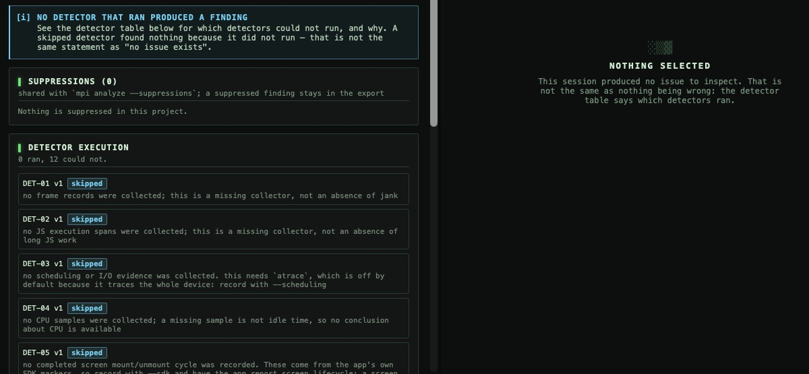

“0 issues” is not a result“0 issues” chưa phải là một kết quả
A real capture of a React Native app on a Pixel 9 came back with zero issues. Not because the app is fast, but because none of the twelve detectors could run. Here is what a profiler should say when it measured nothing, and how to make every detector run. Một lần đo thật app React Native trên Pixel 9 trả về 0 issue. Không phải vì app nhanh, mà vì không detector nào trong số 12 detector chạy được. Bài này nói một công cụ đo nên báo gì khi nó không đo được gì, và làm sao để mọi detector đều chạy.
The captureLần đo
The app is a small React Native CLI test app, com.rncliapp. It ran on a physical Google Pixel 9 with Android 16 in BrowserStack’s device cloud, profiled by BrowserStack App Profiling, and the result was imported into DevX as a session. Every number below is copied from that session’s report.
App là một app React Native CLI nhỏ để thử, com.rncliapp. Nó chạy trên một chiếc Google Pixel 9 thật, Android 16, trong cloud thiết bị của BrowserStack, được đo bằng BrowserStack App Profiling, rồi kết quả được import vào DevX thành một session. Mọi con số dưới đây chép nguyên từ report của session đó.
And the headline: 0 issues. Và dòng tiêu đề: 0 issue.
The tempting readingCách đọc dễ dãi
Most dashboards would draw a green check here. Zero issues, ship it. But look at what was collected: 10 counters, and no frames, no CPU samples, no JavaScript tasks. A jank detector with no frames has nothing to look at. Its silence is not evidence that frames were fine. It is the absence of evidence, dressed up as a result. Phần lớn dashboard sẽ vẽ một dấu tick xanh ở đây. Không có issue, ship thôi. Nhưng hãy nhìn những gì đã thu được: 10 counter, không có frame, không có mẫu CPU, không có JavaScript task. Một detector bắt giật khung hình mà không có frame thì chẳng có gì để xem. Việc nó im lặng không chứng minh frame ổn. Đó là thiếu bằng chứng, được trình bày như một kết quả.
This is not a BrowserStack problem. App Profiling measures what it is built to measure, and DevX labels it as theirs: “measured by BrowserStack App Profiling on their device, not by DevX”. The same thing happens closer to home. A 273-second live capture on an Android emulator in the same week recorded 4,787 memory-counter events, but zero frames and zero CPU samples. Again: 0 issues, and again every detector skipped. Đây không phải lỗi của BrowserStack. App Profiling đo đúng những gì nó được làm ra để đo, và DevX ghi rõ đó là số của họ: “measured by BrowserStack App Profiling on their device, not by DevX”. Chuyện tương tự cũng xảy ra ngay trên máy mình. Một lần đo live 273 giây trên emulator Android cùng tuần ghi được 4.787 event đếm bộ nhớ, nhưng 0 frame và 0 mẫu CPU. Lại 0 issue, và lại toàn bộ detector bị bỏ qua.
What DevX says insteadDevX báo gì thay vào đó
DevX puts the detector table next to the issue list, and it says this before it says anything else: DevX đặt bảng detector ngay cạnh danh sách issue, và nói điều này trước mọi thứ khác:
0 detector(s) ran, 0 found something, 12 could not run.

The report also marks the session ineligible for benchmarking, because it was a diagnostic capture: it can be used to investigate behavior, not to certify release performance. Three rules make this possible:
Report còn đánh dấu session là ineligible để làm benchmark, vì đây là lần đo chẩn đoán: dùng để điều tra hành vi, không dùng để chứng nhận hiệu năng bản release. Ba quy tắc làm được điều này:
- Not measured is not zero. A value nobody measured is shown as missing, never as 0. On the Timeline, a blank column means NOT MEASURED.Không đo không phải là 0. Giá trị không ai đo được hiển thị là thiếu, không bao giờ là 0. Trên Timeline, cột trống nghĩa là KHÔNG ĐO.
- A gap is a gap. Coverage is reported per collector, and an uncovered interval is a gap, not measured idle time.Khoảng trống là khoảng trống. Độ phủ được báo theo từng bộ thu, và một đoạn không được phủ là khoảng trống, không phải thời gian rảnh đã đo.
- Detection is not cause. A finding says what was observed.
cause: unknownis the normal, honest answer until something establishes why.Phát hiện không phải nguyên nhân. Một phát hiện nói điều đã quan sát được.cause: unknownlà câu trả lời bình thường và trung thực cho tới khi có gì đó xác định được vì sao.
What each detector needsMỗi detector cần gì
Twelve detectors, twelve kinds of evidence. Turning a skipped detector into one that runs is a matter of collecting what it reads: Mười hai detector, mười hai loại bằng chứng. Muốn detector bị bỏ qua chạy được thì phải thu đúng thứ nó đọc:
| Detector | Looks forTìm gì | NeedsCần |
|---|---|---|
| DET-01 | Missed frame deadlinesTrễ hạn khung hình (giật) | Frame recordsDữ liệu frame |
| DET-02 | Long JS executionJS chạy quá lâu | JS execution spansCác đoạn thực thi JS |
| DET-03 | Synchronous I/O on a user-visible threadI/O đồng bộ trên luồng người dùng thấy | --scheduling (atrace) |
| DET-04 | Sampled CPU hotspotĐiểm nóng CPU | CPU samplesMẫu CPU |
| DET-05 | Memory growth across screen cyclesBộ nhớ tăng qua các vòng mở/đóng màn hình | --sdk screen markersđánh dấu màn hình |
| DET-06 | Retained objectsObject bị giữ lại | --heap |
| DET-07 | Startup over budgetKhởi động vượt ngân sách | --launch + your budgetngân sách bạn đặt |
| DET-08 | RegressionHồi quy hiệu năng | mpi compare of two run setsgiữa hai nhóm lần chạy |
| DET-09 | Wait / lock contentionChờ / tranh chấp khoá | --scheduling |
| DET-10 | Repeated React rendersReact render lặp lại | --sdk React commitsdữ liệu commit của React |
| DET-11 | Network delay affecting an interactionMạng chậm làm trễ thao tác | --sdk request + interaction spansspan request + thao tác |
| DET-12 | Expensive dev-tooling activityCông cụ dev tốn tài nguyên | Sampled stacksStack đã lấy mẫu |
The startup rule is a good example of the stance. DET-07 will not run without a budget, because no platform publishes one: “a budget is a product decision”, so DevX will not invent a number. You set it. Quy tắc khởi động là ví dụ rõ nhất cho cách DevX làm. DET-07 không chạy nếu chưa có ngân sách, vì không nền tảng nào công bố con số đó: “a budget is a product decision” (ngân sách là quyết định sản phẩm), nên DevX không tự bịa ra một con số. Bạn tự đặt.
Make them runCho chúng chạy
On Android, a capture that DevX records itself collects frames and CPU samples. Ask first what this device and app can give you, then record with the heavier collectors switched on: Trên Android, một lần đo do chính DevX ghi sẽ thu frame và mẫu CPU. Hãy hỏi trước thiết bị và app này cho được những gì, rồi ghi với các bộ thu nặng hơn được bật:
# what can be measured here, and how to fix what cannotđo được gì ở đây, và sửa chỗ không đo được thế nào
mpi preflight --device <id> --app com.example.app
# start the app, trace scheduling, take a heap dumpkhởi động app, trace lịch CPU, chụp heap dump
mpi record --device <id> --app com.example.app \
--duration-s 20 --launch --scheduling --heap
# add your startup budgetthêm ngân sách khởi động của bạn
mpi analyze <session> --threshold DET-07.budget_ms=<ms>
Two notes. --scheduling runs atrace on the whole device, not just your app, so DevX prints that cost before it starts. --heap pauses the app to write the dump. For screens, React commits and network spans, add the dependency-free in-app SDK and record with --sdk: those come from the app itself, and DevX will not guess a screen from a function name.
Hai lưu ý. --scheduling chạy atrace trên toàn bộ thiết bị, không chỉ app của bạn, nên DevX in ra chi phí đó trước khi bắt đầu. --heap tạm dừng app để ghi file dump. Với màn hình, React commit và network span, hãy thêm SDK nhỏ (không phụ thuộc thư viện nào) vào app và ghi với --sdk: các dữ liệu này đến từ chính app, và DevX không đoán màn hình từ tên hàm.
In the app it is the same path: Devices → Apps → Preflight → Live or Record → Issues, where the detector table tells you, detector by detector, whether the answer is “nothing found” or “nothing looked”. Trong app cũng đi đúng đường đó: Devices → Apps → Preflight → Live hoặc Record → Issues. Ở đó bảng detector cho bạn biết, từng detector một, câu trả lời là “không tìm thấy gì” hay “không ai nhìn”.
The pointĐiều cần nhớ
A profiler that reports zero issues when it could not look trains you to trust silence. The fix is cheap: say which checks ran, say why the others did not, and never let a missing measurement read as a good one. When a DevX report says 0 issues and 12 of 12 detectors ran, that zero means something. Một công cụ đo báo 0 issue khi nó không nhìn được gì sẽ khiến bạn quen tin vào sự im lặng. Cách sửa rất rẻ: nói rõ kiểm tra nào đã chạy, vì sao những cái còn lại không chạy, và không bao giờ để một phép đo bị thiếu trông như một phép đo tốt. Khi report của DevX ghi 0 issue và 12/12 detector đã chạy, con số 0 đó mới có ý nghĩa.
DevX is free and open source (MIT), for Apple Silicon Macs on macOS 14 or newer. DevX miễn phí và mã nguồn mở (MIT), cho máy Mac Apple Silicon chạy macOS 14 trở lên.
Install DevXCài DevX